After completing this lesson, you’ll be able to:
Another method of managing source file data in FME Flow is to use Resources, a built-in file management system that allows you to publish and reuse data in all FME Flow workflows. You easily access Resources from the FME Flow side menu.
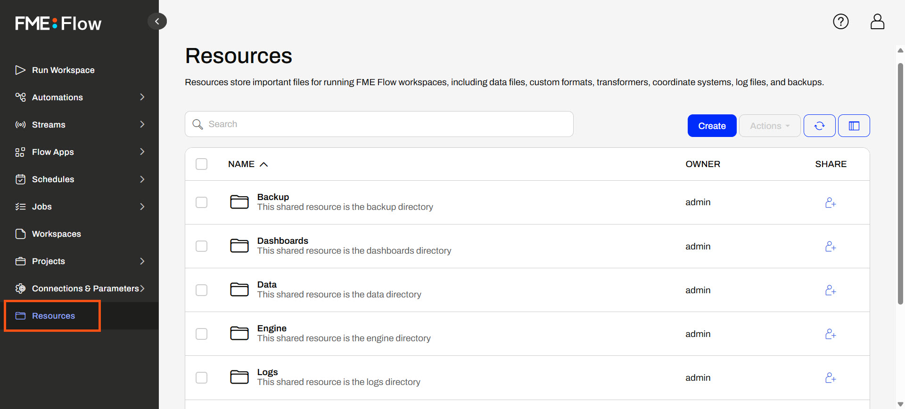
The Resources page contains files you have uploaded to FME Flow and those created by FME Flow while operating, such as logs and backup files. The FME Flow System Share stores Resources content, which you can find in C:\ ProgramData\Safe Software\FMEFlow\resources by default on Windows. If you're taking a Safe Software-hosted training course, your FME Flow stores Resources in the default location. You'll see the same folders and files here as the Resources on FME Flow.
Remember that Resources and Repositories are different. You publish workspaces to repositories. You cannot run them if you upload them to Resources.
One of the default Resource folders is the Data folder. This folder stores source and destination data for your workflows. You can create folders and sub-folders within them and upload file-based datasets. If your FME Flow user or role has sufficient permissions, you can use the datasets stored in Resources as source data or write output data for any workspaces.
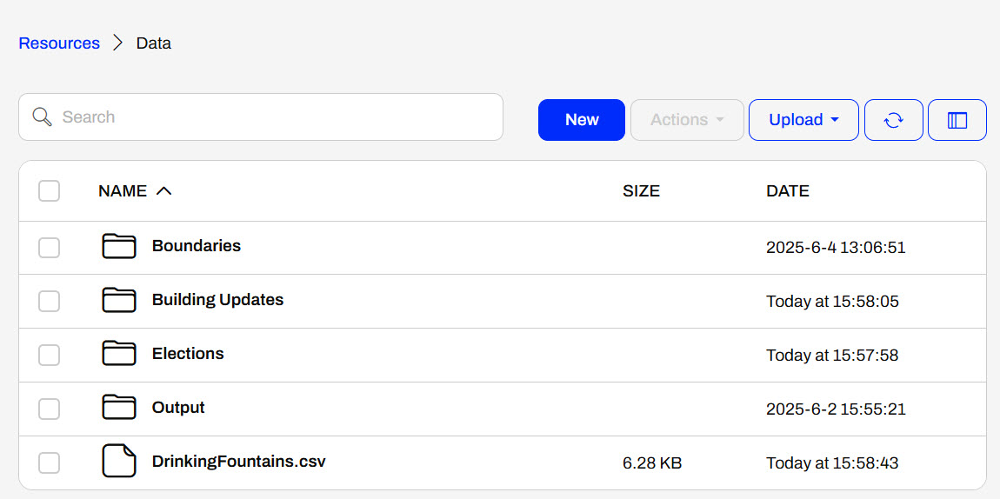
Once you select an item, the Actions options list various operations you can perform on the file or folder, such as duplicate, edit, upload, copy, delete, or move files (or folders).
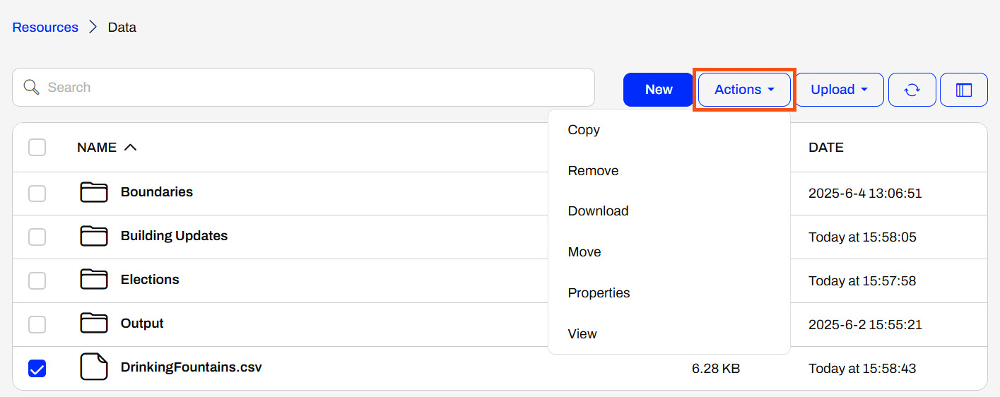
Remember the $(FME_SHAREDRESOURCE_DATA) parameter from Build Self-Serve Workflows with Parameters? The Data folder in Resources is precisely where it points to. You can find the Resources path to reference data in Properties.
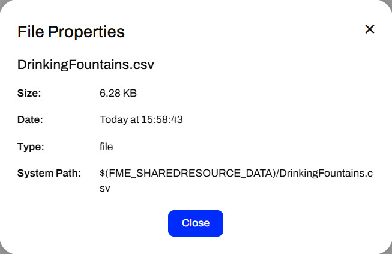
You publish data to Resources in the Data folder, like adding data to a workspace repository. In the publishing wizard, you must switch the location to upload files from the Repository by default to Resources.
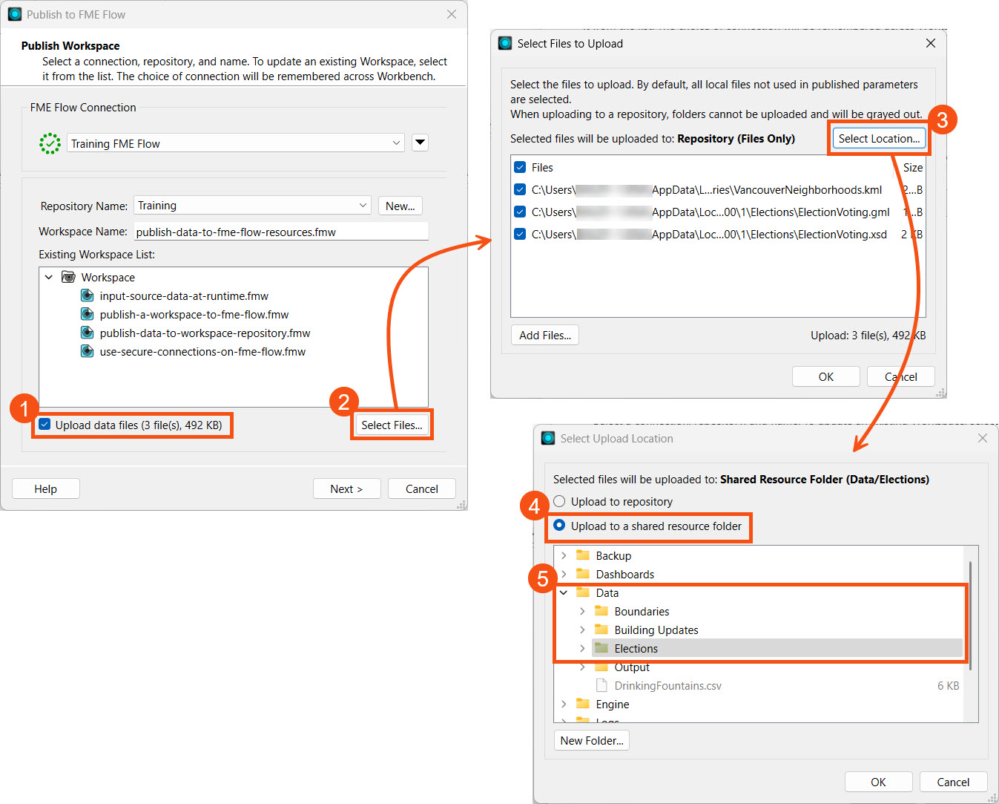
Like publishing data to a repository, you can check the Publish Summary in the Translation Log to see the Uploaded Resources.
When you run the workspace on FME Flow, the source data parameters reference the Resources location where the data was published by default. If the source data is a published parameter, you may upload or select different data to input. However, if there's no parameter, the workspace uses the Resources data by default, and the end-user cannot change it.
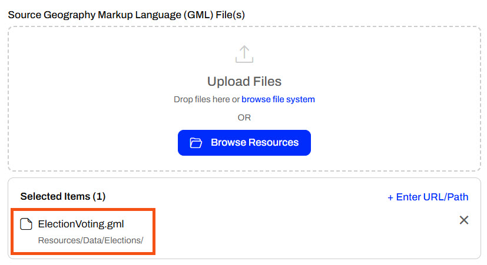
For more information on source data parameters on FME Flow, review Build Self-Serve Workflows with Parameters.
There are several benefits to using the Resources file system for data storage on FME Flow:

Sven continues working with his previous workspace, which clips voting locations to neighborhoods in Vancouver and stores the transformed data in a geodatabase. He is working with the source GML and KML data and is experimenting with finding the best location to store the data when the workspace is run on FME Flow.
This time, Sven will publish the source data to FME Flow Resources. The benefit of this is that other workspaces can easily access the data, and multiple copies do not need to be stored in repositories.
Sven continues with his workspace in FME Workbench (C:\FMEData\Workspaces\DeployWorkflowsWithFMEFlow\publish-data-to-fme-flow-resources.fmw).
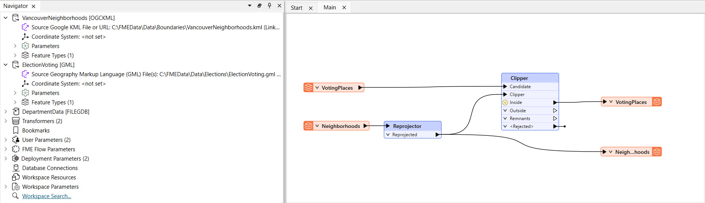
This is the same starting workspace as the previous lesson, Publish Data to Workspace Repository. If you already have the workspace open in FME Workbench, you can continue working with it.
Sven opens the publishing wizard.

Sven selects the Training repository for his workspace and names it publish-data-to-fme-flow-resources.fmw.
Like uploading source data to a repository, Sven selects Upload data files and then opens Select Files... Source files are uploaded to the repository by default, so Sven clicks Selection Location... to choose Resources instead.
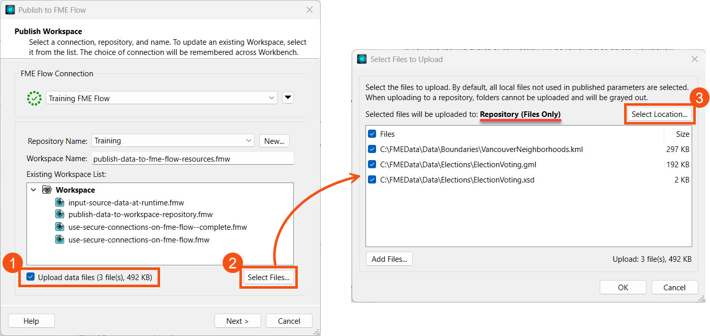
Sven selects the option to upload to a shared resource folder, then selects the Data folder. He clicks New Folder to create an Elections folder to store the data.
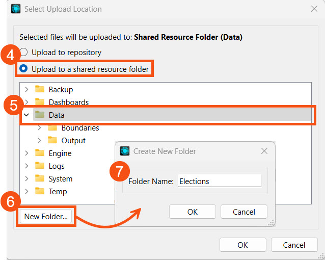
Sven clicks OK to close and save his settings. From the Select Files to Upload window, he can see that the upload location has changed to Data/Elections in the FME Flow Resources. Sven clicks OK and then goes to the last publishing step.
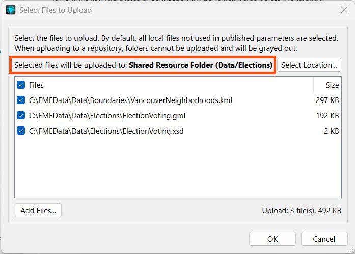
Sven registers the workspace with the Job Submitter and clicks Publish.
In the Publish Summary, Sven sees that FME included the three files as Uploaded Resources.
Sven navigates to FME Flow and opens his new Elections folder in Resources > Data. He sees the three uploaded files there. 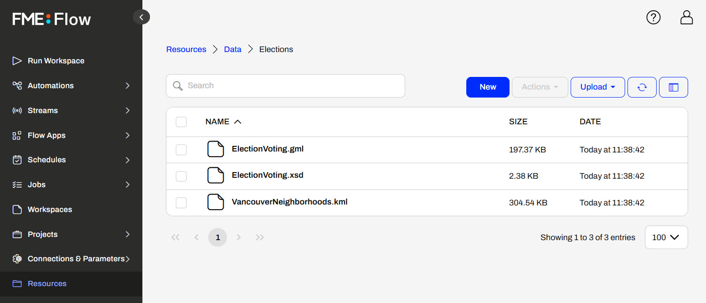
Sven opens the Run Workspace page and selects his recently published workspace.
Under Published Parameters, Sven sees the default source files reference the data he published to Resources.
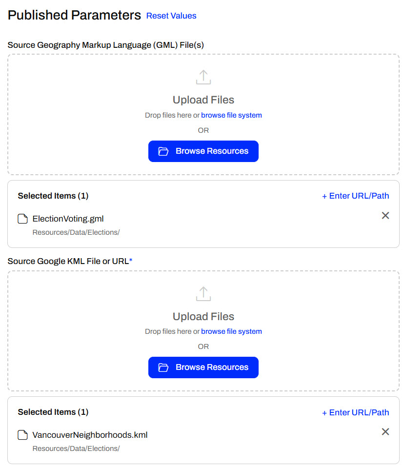
Sven runs the workspace using the data from Resources. Other workspaces can also run using these datasets, limiting the duplicate data you otherwise store in repositories.